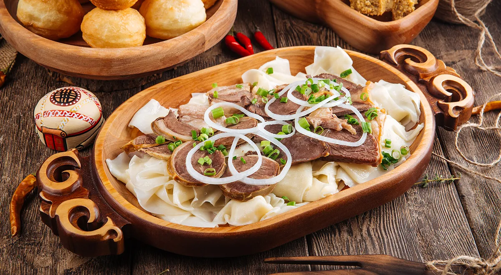

Dinner recipe
Traditional beshbarmak
The national Kazakh dish: tender boiled meat with thin homemade noodles and onion sauce.
More meat dishes
Ingredients
- Meat (horse meat, beef or lamb) - 1 kg
- Flour - 300 g
- Egg - 1 piece
- Water - 100 ml
- Onion - 2 pieces
- Salt, black pepper - to taste
Instructions
- Place the meat in a pot with cold water, bring to a boil and remove the foam.
- Cook the meat on low heat for about 2 hours, add salt at the end.
- Mix the flour, egg, water and a pinch of salt into a firm dough and let it rest for 20 minutes.
- Roll out the dough thinly and cut it into squares.
- Take out the meat and boil the dough squares in the broth for 3-4 minutes.
- Slice the onion, pour hot broth over it with pepper and serve everything on a big plate.